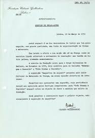
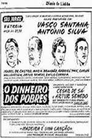
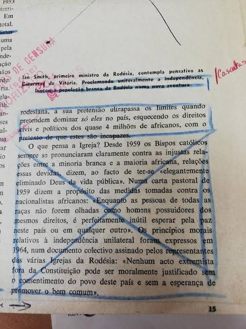

Documentos
Cartas, recortes de imprensa e outros papéis do arquivo.
Documentos institucionais e de imprensa


Originais de teatro

A censura e a imprensa do tempo
Documentos do contexto em que Carlos Wallenstein trabalhou: a Censura do Estado Novo acompanhou grande parte da sua vida profissional.


Seguir-se-ão manuscritos, correspondência, esboços e projectos, à medida que forem digitalizados e a família decidir sobre a sua divulgação.